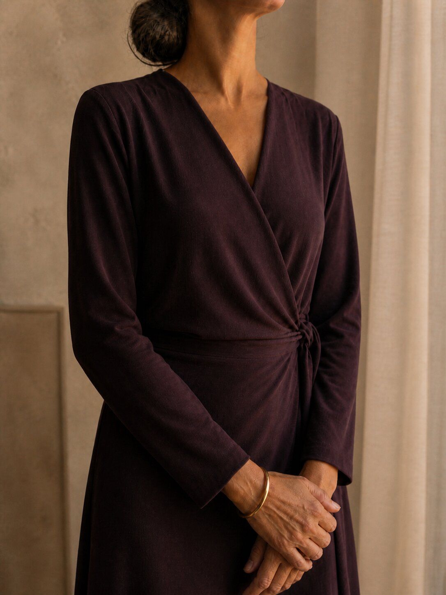
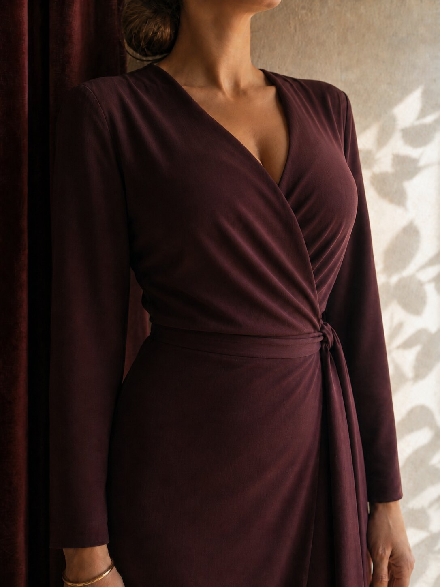
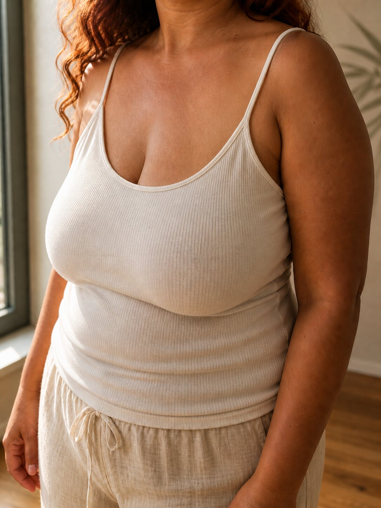
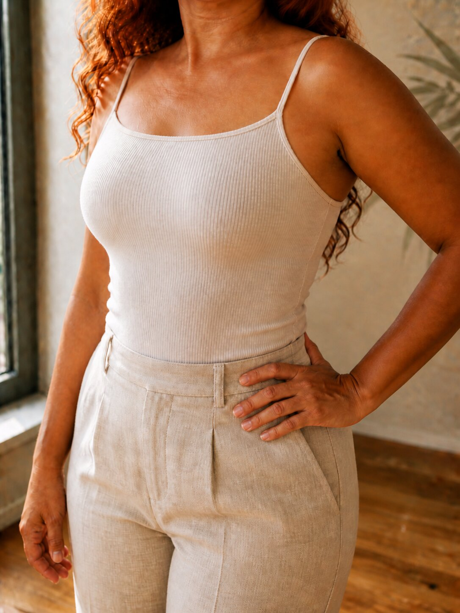

Sem prótese
Pra quem o próprio tecido tem como entregar o decote.
Eu reposiciono, sustento e preencho com o que já é seu.
Resultado: colo alto, natural, zero corpo estranho.
Indicada quando: o seu seio tem volume, mas está mal posicionado ou caído.
Cirurgia de mama · São Paulo · Dra. Geórgia Peres
Cirurgia de mama com colo natural, alto e firme — com ou sem prótese. Quem decide é o seu corpo, não um catálogo.
Não é vaidade. É você querendo se ver de novo.
Você sai do banho.
O espelho devolve um peito que sustenta sozinho. Colo alto. Decote presente.
Vestido sem bojo cai. Biquíni cai. Camisola cai.
Você não ajusta nada antes de abrir a porta.
Quando alguém olha, você sustenta o olhar.
Quando você se despe, a luz fica acesa.
Esse é o trabalho da Dra. Geórgia. Devolver isso pra você.
A especialista
A maioria dos cirurgiões plásticos opera tudo: rosto, abdômen, lipo, mama.
Eu escolhi um caminho diferente.
Mama é a minha especialidade.
Foi por isso que percebi cedo o que o mercado faz errado: vende peito por tamanho de prótese. Por número. Por modismo. Antes de olhar pro decote que a paciente quer.
Eu inverti a ordem.
Primeiro a gente desenha o seu decote. Depois — e só se fizer sentido — a gente decide a técnica.
Às vezes o seu próprio tecido entrega o resultado, sem prótese. Às vezes a prótese é a melhor escolha — e aí ela é calibrada pra ficar natural, não pra parecer prótese.
A pergunta nunca é "quantos ml?". A pergunta é "qual decote você quer?".
Os dois caminhos
Na sua avaliação, você vê os dois caminhos lado a lado, com fotos e plano. E escolhe sabendo o que cada um entrega.
Pra quem o próprio tecido tem como entregar o decote.
Eu reposiciono, sustento e preencho com o que já é seu.
Resultado: colo alto, natural, zero corpo estranho.
Indicada quando: o seu seio tem volume, mas está mal posicionado ou caído.
Pra quem precisa de preenchimento que o tecido sozinho não dá.
A prótese é escolhida pelo desenho do decote — não pelo tamanho.
Resultado: colo cheio, transição natural, sem cara de plástico.
Indicada quando: tem vazio no colo que só preenchimento estrutural resolve.
Em qualquer dos dois caminhos, o objetivo é o mesmo: decote bonito, natural, que dura.
Mapa IPC
IPC é como eu meço o quanto o seu colo preenche o seio numa foto a 45°. Quanto maior o número, mais cheio e natural é o decote. O alvo é 5.
Sua avaliação começa com uma pergunta simples: qual é o seu IPC hoje?
A partir daí, o plano se desenha.
Eu não sabia que dava pra ter esse colo sem prótese. A Dra. me mostrou que o meu próprio tecido tinha o que precisava.


Cheguei pedindo prótese grande. Saí com uma prótese menor — e o decote dos meus sonhos. Era o desenho que faltava, não o tamanho.


Eu tinha medo de cicatriz. A Dra. me mostrou foto de cicatriz dela em 90 dias. Foi a primeira vez que senti que decidi sem ser empurrada.
Fotos com IPC em 90 dias, não em 7. Resultado de verdade — não inchaço.
Voltei a usar biquíni depois de 8 anos.
Meu marido perguntou o que eu tinha feito. Eu respondi: "eu preencho meu sutiã agora."
Parei de cortar foto do ombro pra cima.
Tomei a decisão sem pressão. Foi a primeira vez.
Não é uma consulta de 15 minutos. São 90 minutos com a Dra. Geórgia onde você sai com:
Avaliação presencial ou online
O valor da avaliação vira crédito na sua cirurgia, em até 90 dias. Detalhes no WhatsApp.
Não. Muitas pacientes saem daqui com colo alto sem prótese. O Mapa IPC mostra qual é o seu caso.
Não, se a prótese for escolhida pelo desenho do decote — não pelo tamanho. Eu mostro casos de IPC 5 natural na avaliação.
Cicatriz é uma troca real. Na avaliação você vê fotos minhas em 90 dias e decide com a informação completa.